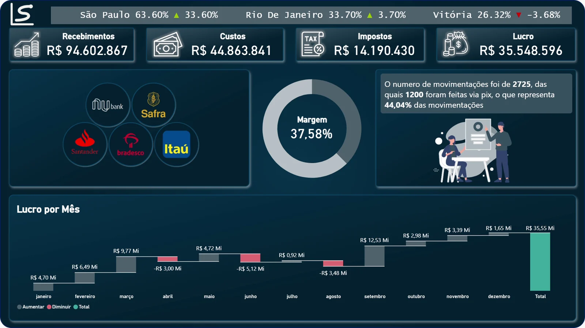
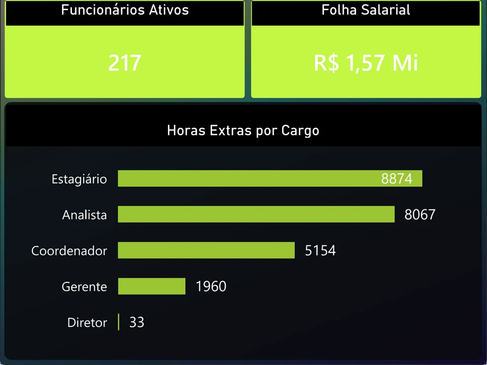

Dashboards em Power BI com identidade própria.
Vendas, produção, RH e financeiro: dados tratados, medidas em DAX e um visual pensado para quem decide.

Os quatro painéis
Escolha um painel para ver a gravação dele funcionando, com os filtros em uso.
Dashboard Financeiro
Recebimentos de R$ 94,6 milhões, lucro de R$ 35,5 milhões e margem de 37,58%. Os logos dos bancos funcionam como filtro, a cascata mostra o lucro mês a mês e um texto automático resume o uso do Pix.
- Logos dos bancos como filtro
- Gráfico de cascata
- Texto dinâmico
- Texto rolante com desvio da meta
Como eu monto um painel
- Power QueryImporto, limpo e padronizo as bases antes de qualquer gráfico.
- ModelagemOrganizo as tabelas e as hierarquias de data para filtrar por ano e mês.
- Medidas em DAXMargem, rotatividade, % de qualidade e desvio da meta calculados no modelo.
- Design LS DadosTema próprio, com cores testadas para daltonismo, fundos e ícones padronizados.

Mais detalhe sem poluir a tela
No Dashboard RH, ao passar o mouse sobre uma cidade aparece uma página extra com a folha salarial e as horas extras por cargo daquele lugar. O painel principal continua limpo.